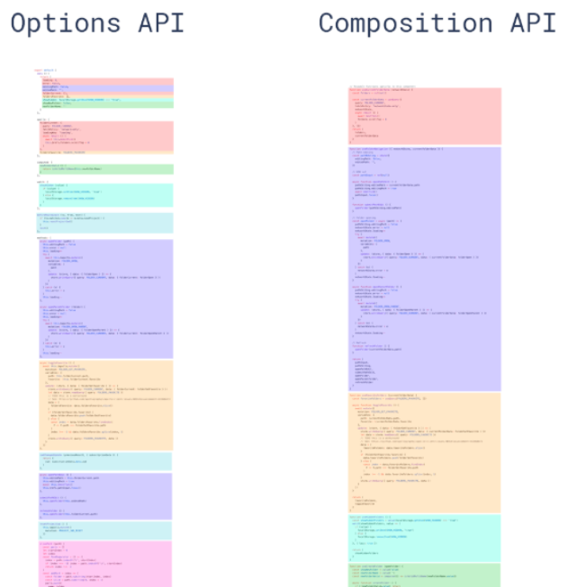

Vue3设计目标和优化
关于Vue3的面试总结
Vue3设计目标
不以解决实际业务痛点的更新都是耍流氓。以下是在Vue3之前或许面临的问题
- 随着功能的增长、复杂组件的代码变得越来越难维护
- 缺少一种比较干净的在多个组件之间提取和复用的逻辑
- 类型推断不够友好
- bundle的时间太长
而Vue3经过两三年的筹备，做了哪些事情？
- 更小
- 更快
- TypeScript的支持
- API设计性一致
- 提高自身可维护性
- 开放底层更多功能
更小
Vue3移除了不常用的API
引入 tree-shaking，可以将无用模块“剪辑”，仅打包需要的，使打包的整体体积变小了
更快
主要体现在编译方面
- diff算法的优化
- 静态提升
- 事件监听缓存
- SSR优化
更友好
Vue3在兼顾Vue2的options API的同时还推出了composition API，大大增加了代码的逻辑组织和代码复用能力。
这里代码展示下官网的例子：
1 | // mouse.js |
我们只需要调用这个函数就可以获得x，y的坐标。完全不用关注怎样实现的。
可想而知，如果有很多第三方库，我们只需要调用即可，不用关注实现过程。是不是就大大的提高了开放效率。同时，Vue3基于TypeScript编写的，可以享受自动的类型定义提示。
Vue3的优化
源码
源码可以分为两个层面展开：
- 源码管理
- TypeScript
源码管理
Vue3整个源码是通过 monorepo 的方式维护的，根据功能将不同的模块拆分到packages目录下面不同的子目录中
这样使得模块拆分更细化，职责划分更明确，模块之间的依赖关系也更加明确，开发人员也更容易阅读、理解和更改所有模块源码，提高代码的可维护性
TypeScript
Vue3是基于typeScript编写的，提供了更好的类型检查，能支持复杂的类型推导
性能
Vue3对性能进一步优化
- 体积优化
- 编译优化
- 数据劫持优化
Vue2中数据劫持是使用Object.defineProperty实现的，这个API不能监听对象属性的添加和删除，尽管Vue提供了Set和delete实例方法，但在嵌套层级比较深的情况下，就存在性能问题。
相比之下，Vue3是通过ES6中的proxy监听对象。
同时 Proxy 并不能监听到内部深层次的对象变化，而 Vue3 的处理方式是在 getter 中去递归响应式，这样的好处是真正访问到的内部对象才会变成响应式，而不是无脑递归。
语法API
Composition API两大显著的优化
- 优化编辑组织
- 优化逻辑复用
一张图直观感受Composition API在逻辑组织方面的优势。

逻辑复用
在Vue2中，我们是通过mixin实现功能混合，如果多个mixin混合，会存在两个非常明显的问题：命名冲突和数据来源不清晰
而通过composition这种形式，可以将一些复用的代码抽离出来作为一个函数，只要的使用的地方直接进行调用即可。例如上面获取鼠标位置的函数。
总结
设计目标：更小、更快、TypeScript的支持、API设计性一致、提高自身可维护性、开放底层更多功能。
优化：对源码进行了管理，使用ts编写。体积、编译和数据劫持的优化